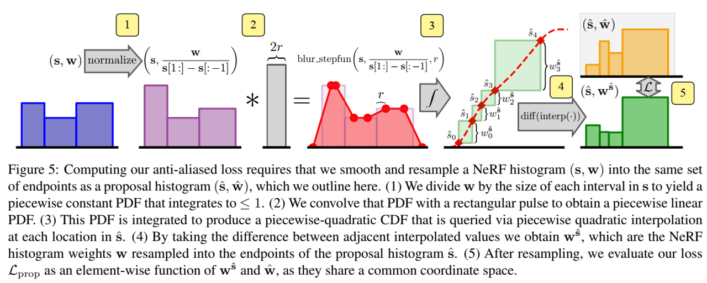
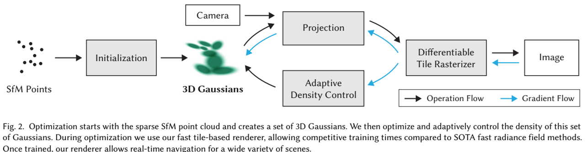
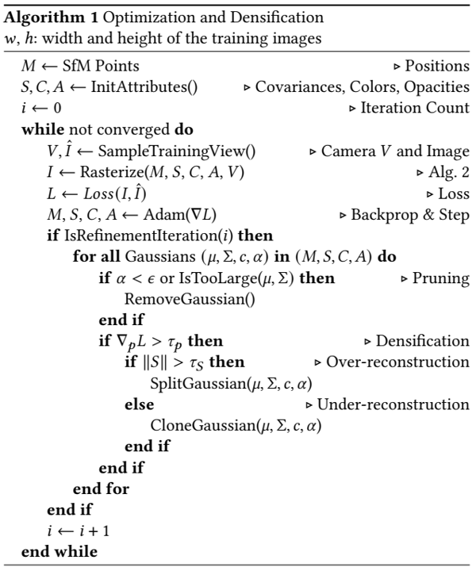
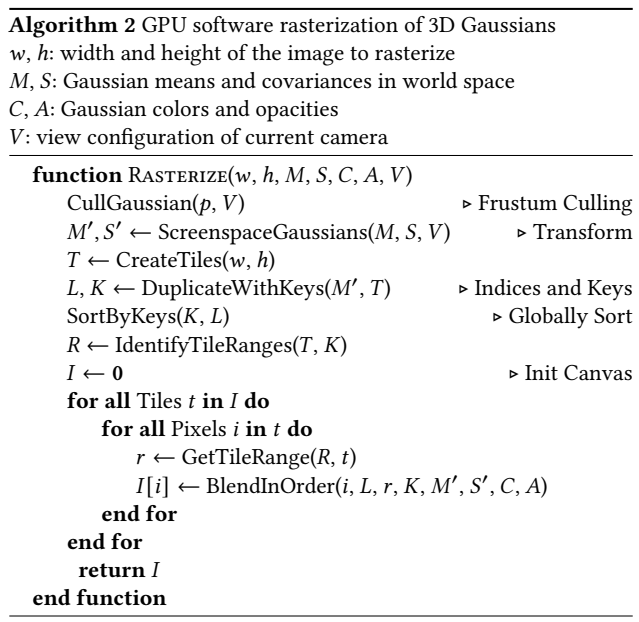
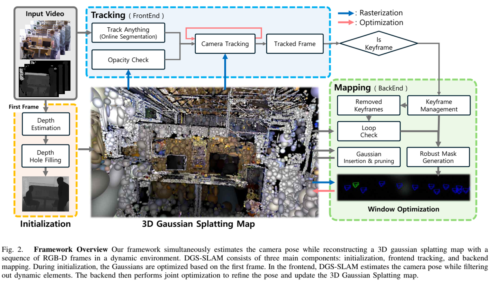

综述八：高斯泼溅
模型
NeRF: Representing Scenes as Neural Radiance Fields for View Synthesis (20/03)
论文地址
核心思想：提出一种方法，通过使用一组稀疏输入视图，优化底层的连续体积场景函数，取得合成复杂场景的新颖视图的先进结果。该算法使用全连接（非卷积）深度网络来表示场景，其输入是单一连续5D坐标（空间位置(x,y,z) 和视图方向 ）且其输出是该空间位置的体积密度和视图相关辐射亮度（view-dependent emitted radiance）。通过查询沿相机光线的5D坐标，并使用经典体积渲染技术将输出颜色和密度投影到图像来合成视图。因为体积渲染天然可微，优化表示所需的唯一输入是一组已知相机位姿的图像。

Instant Neural Graphics Primitives with a Multiresolution Hash Encoding (22/01)
论文地址
代码
核心思想：由全连接神经网络参数化的神经图形基元训练和评估成本很高。我们通过一种通用的新输入编码来降低成本，该编码允许在不牺牲质量的情况下使用较小的网络，从而显著减少浮点和内存访问操作的数量：一个小型神经网络由一个可训练特征向量的多分辨率哈希表增强，其值通过随机梯度下降进行优化。多分辨率结构允许网络消除哈希冲突，从而形成一种在现代 GPU 上易于并行化的简单架构。我们通过使用完全融合的CUDA内核实现整个系统来利用这种并行性，重点是最大限度地减少浪费的带宽和计算操作。我们实现了几个数量级的组合加速，能够在几秒钟内训练出高质量的神经图形图元，并在数十毫秒内以1920×1080的分辨率进行渲染。
Zip-NeRF: Anti-Aliased Grid-Based Neural Radiance Fields (23/04)
论文地址
核心思想：通过在NeRF从空间坐标到颜色和体积密度的学习映射中使用基于网格的表示，可以加速神经辐射场训练。然而，这些基于网格的方法缺乏对尺度的明确理解，因此经常引入混叠，通常以锯齿或缺少场景内容的形式出现。mip-NeRF 360之前已经解决了抗锯齿问题，它对沿锥体的子体积而不是沿光线的点进行了推理，但这种方法与当前基于网格的技术本身并不兼容。我们展示了如何使用渲染和信号处理的想法来构建一种技术，该技术将mipNeRF 360和基于网格的模型（如Instant NGP）相结合，产生的错误率比现有技术低8%-77%，并且训练速度比mip NeRF 360快24倍。

3d gaussian splatting for real-time radiance field rendering （23/08）
- 引入各向异性（anisotropic）3D高斯作为高质量、非结构化的辐射场表示。
- 3D高斯属性的优化方法，与自适应密度控制交织，为捕获的场景创建高质量的表示。
- 快速可微GPU渲染方法，具有可见性感知，允许各向异性泼溅和快速后向传播，从而获得高质量的新视图合成。



SplatFormer: Point Transformer for Robust 3D Gaussian Splatting (24/11)
论文地址
代码
核心思想：3D高斯溅射（3DGS）最近改变了真实重建，实现了高视觉保真度和实时性能。然而，当测试视图偏离训练期间使用的相机角度时，渲染质量会显著下降，这对沉浸式自由视点渲染和导航的应用程序构成了重大挑战。本工作中，我们综合评估3DGS及其相关的新视图合成方法，在分布外（OOD）测试相机场景下。我们展示了大多数现有方法，包括那些结合各种正则化技术和数据驱动先验的方法，难以高效泛化到OOD视图。为解决这种限制，我们引入SplatFormer，首个专门设计在高斯溅射上操作的点transformer模型。SplatFormer将在有限训练视图下优化的初始3DGS集作为输入，并在一次前向传递中对其进行细化，有效地消除了OOD测试视图中的潜在伪影。据我们所知，这是点Transformer直接在3DGS集上的首次成功应用，超越了以前多场景训练方法的局限性，这些方法在推理过程中只能处理有限数量的输入视图。我们的模型显著提高了极端新颖视图下的渲染质量，在这些具有挑战性的场景中实现了最先进的性能，并优于各种3DGS正则化技术、为稀疏视图合成量身定制的多场景模型和基于扩散的框架。
Quadratic Gaussain Splatting for Efficient and Detailed Surface Reconstruction (24/11)
核心思想：最近，3D高斯泼溅（3DGS）因其在神经辐射场（NeRF）之上的卓越的渲染质量和速度而受到关注。为了解决3DGS在曲面表示中的限制，2D高斯泼溅（2DGS）引入圆盘（disks）作为场景基元，来建模和重构来自多视图图像的几何图形。然而，圆盘的一阶线性近似常常导致过平滑的结果。我们提出二次高斯泼溅（QGS），一种新方法，它用二次曲面替代圆盘，增强了几何拟合。QGS在非欧空间定义高斯分布，允许基元捕获更复杂的纹理。作为二阶曲面近似，QGS还渲染空间曲率来指导法线一致性项，来有效减少过平滑。而且，QGS是2DGS的泛化版本，取得更准确和细致的重建，已由DTU和TNT上的实验验证，展示了它超越了几何重建中大多数先进方法的有效性。
DGS-SLAM: Gaussian Splatting SLAM in Dynamic Environment (24/11)
论文地址
核心思想：动态高斯溅射 SLAM (DGS-SLAM)，这是第一个基于高斯溅射构建的动态 SLAM 框架。虽然密集 SLAM 的最新进展利用了高斯溅射来增强场景表示，但大多数方法都假设静态环境，这使得它们容易受到动态物体引起的光度和几何不一致的影响。为了应对这些挑战，将高斯溅射 SLAM 与强大的过滤过程（robust filtering process）相结合，以处理整个管道中的动态对象，包括高斯插入和关键帧选择。在这个框架内，为了进一步提高动态对象移除的准确性，引入了一种强大的掩模生成方法，该方法可以在关键帧之间强制光度一致性，从而减少不准确分割和阴影等伪影造成的噪声。此外，提出了循环感知窗口选择机制，该机制利用 3D 高斯函数的唯一关键帧 ID 来检测当前帧和过去帧之间的循环，从而促进当前相机姿势和高斯图的联合优化。DGS-SLAM 在各种动态 SLAM 基准测试中实现了相机跟踪和新颖视图合成方面的最先进性能，证明了其在处理现实世界动态场景方面的有效性。
